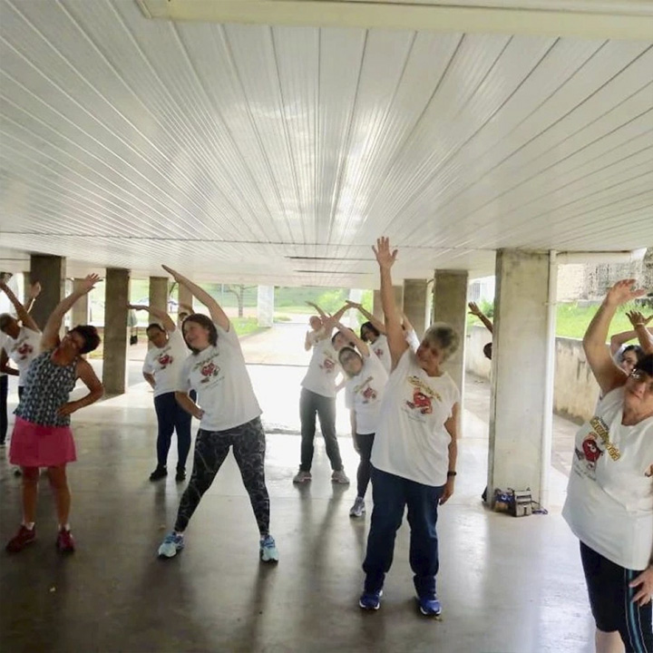
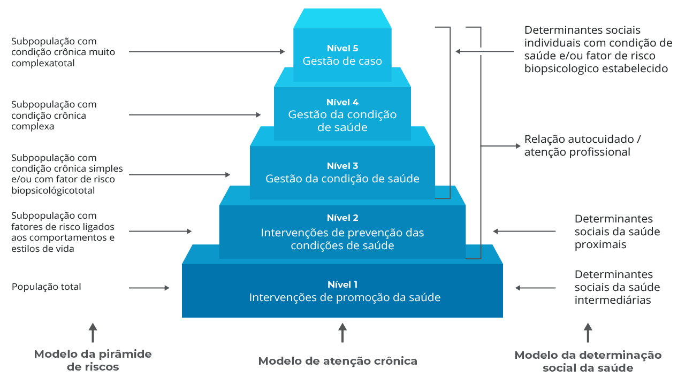

Módulo 2 | Aula 1 Promoção da saúde e prevenção de doenças: aspectos conceituais, políticas e ações na APS
Prevenção de doenças e enfrentamento de doenças crônicas não transmissíveis (DCNT)

A prevenção de doenças e agravos está ligada ao conjunto de ações que englobam a vigilância em saúde e a atenção à saúde, com o objetivo de estruturar a rede de proteção e cuidado aos indivíduos, às ações antecipadas (preventivas) frente aos fatores de risco das doenças e acidentes e às ações intersetoriais que pactuem intervenções estruturantes nas cidades e no campo e lançamento de acordos regulatórios que incidam nos fatores de risco (BRASIL, 2021b).
As ações de promoção da saúde são fundamentais no contexto do enfrentamento das doenças crônicas.
O conjunto de ações de promoção da saúde e prevenção de doenças e a sua diferenciação pode ser melhor compreendido por meio do Modelo de Atenção às Condições Crônicas (MACC), proposto para utilização no SUS (MENDES, 2013). Compreende uma forma de organizar o sistema de saúde e suas ações tendo em vista o manejo das condições crônicas.
Com a transição epidemiológica, ocorrida nas últimas décadas, o panorama da morbimortalidade no Brasil se modificou de forma que as doenças crônicas passaram a ser responsáveis pelas principais causas de óbito na população. As DCNT são responsáveis pela maior carga de morbidade e mortalidade no mundo. De acordo com dados preliminares, no Brasil, 51,0% dos óbitos registrados foram causados por DCNT, sendo aproximadamente 40% mortes prematuras em 2022 (BRASIL, 2023)
Em 2018, foram evidenciados 25 mil óbitos por hipertensão arterial sistêmica no Brasil e 65 mil óbitos por diabetes mellitus (BRASIL, 2020). Diante deste cenário, evidenciou-se a necessidade de se adotar um modelo voltado à atenção às condições crônicas, cuja maior parte da assistência é realizada na APS (MENDES, 2013).
Dentre as DCNT, as doenças do aparelho circulatório, as neoplasias e as doenças do aparelho respiratório foram a primeira, a segunda e a terceira causa de óbito, na população brasileira, respectivamente, em 2019 (BRASIL, 2021b).
Do ponto de vista da organização dos serviços de saúde, é importante notar que a distinção entre doenças crônicas transmissíveis e não transmissíveis torna-se menos relevante se comparada ao uso da terminologia condições crônicas e condições agudas, visto que existem doenças transmissíveis com reflexo no sistema de saúde semelhante às doenças crônicas não transmissíveis, como, por exemplo, o HIV.
Você encontrará um link para um texto da OMS, que fala sobre o cuidado das condições crônicas na Atenção Primária à Saúde.
O MACC é composto por 5 níveis: nível 1 (intervenções de promoção da saúde), nível 2 (intervenção de prevenção das condições de saúde), nível 3 (gestão da condição de saúde), nível 4 (gestão da condição de saúde) e nível 5 (gestão de caso), conforme figura a seguir.

As intervenções de promoção da saúde são realizadas no nível 1 do modelo, voltadas à população em geral e focadas nos DSS intermediários, como os fatores relativos às condições de vida e de trabalho, o acesso a serviços essenciais e as redes sociais e comunitárias (exemplificados nas camadas intermediárias da Figura anterior). Envolvem ações intersetoriais, de diferentes segmentos da sociedade, e não apenas ou exclusivamente da área da saúde. Podem ser intervenções para a melhoria do saneamento básico, das condições de trabalho, iniciativas na área de educação, etc.
O nível 2 do MACC incorpora a prevenção das condições de saúde, em subpopulações de risco, por meio de intervenções sobre os determinantes sociais da saúde proximais, relativos aos comportamentos e ao modo de viver. Os DSS proximais, oriundos de comportamentos e de estilos de vida, são considerados fatores de risco. Os fatores de risco podem ser modificáveis ou comportamentais e não modificáveis. Os não modificáveis são aqueles em que não se pode intervir, como: sexo, idade, herança genética. Já os modificáveis são os comportamentais, que são abordados no nível 2 do MACC. Nesses fatores, a equipe de saúde pode e deve intervir, através de estratégias de conscientização, mudança comportamental, escuta qualificada, acolhimento do usuário e do conjunto das suas necessidades.
O foco em promover o aumento da Literacia para a Saúde também é fundamental nesse contexto, pois favorece a maior autonomia para que os indivíduos consigam maior adesão às estratégias e desenvolvam com maior efetividade o autocuidado em saúde.
Os níveis 3, 4 e 5 irão abordar os fatores de risco não modificáveis, bem como os fatores de risco biopsicológicos como a hipertensão, a dislipidemia, a intolerância à glicose e a depressão (MENDES, 2012), mas em populações com níveis de risco e complexidade crescentes. Apesar do termo conceitual utilizado “fatores de risco não modificáveis”, é importante ter em mente que a epigenética vem ganhando força nos últimos anos e alguns estudos utilizando biologia molecular vem sugerindo a possibilidade de que mudanças comportamentais, como em estilo de vida, possam promover alterações genéticas nos indivíduos (KANHERKAR, 2014).
Em todo o modelo de atenção às condições crônicas, o autocuidado, que consiste na habilidade individual para lidar com sintomas, tratamentos e com as consequências físicas e sociais de uma condição crônica, bem como com as mudanças dos modos de vida necessários para viver com ela, é tido como um elemento central e será visto com maiores detalhes nas próximas aulas.